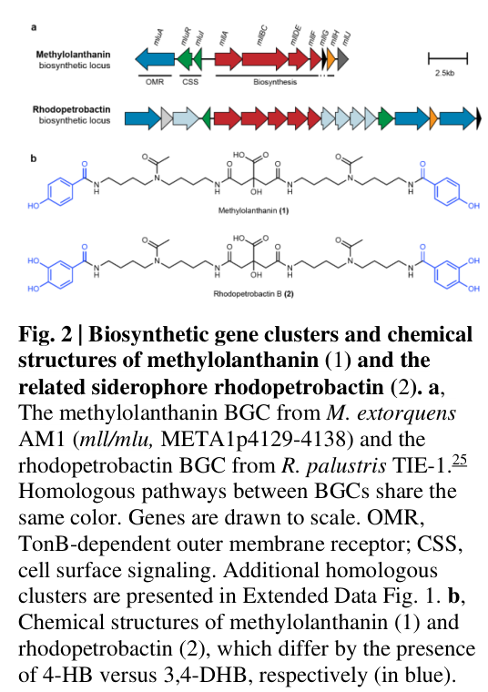

NRPS-independent siderophore (NIS) synthetase-like adenylate-forming ligase (mllBC fusion) of the methylolanthanin biosynthetic pathway. The mllBC fusion combines asbD and asbE homolog functions in a single polypeptide and most likely catalyzes one or more ATP-dependent acyl-adenylation and amide bond-forming steps required to assemble methylolanthanin, a citrate-based lanthanophore that binds lanthanides (La/Nd/Lu) and promotes lanthanide uptake/bioaccumulation in M. extorquens AM1. The protein lies in the mll gene cluster (META1p4129-4138; locus META1p4133), which is strongly induced (~32-fold) under poorly soluble lanthanide conditions. Functional assignment is cluster- and homology-supported (homologous to petrobactin asb/IucA-IucC NIS pathways); no purified single-enzyme assay of C5B1I5 has been reported.
| GO Term | Evidence | Action | Reason |
|---|---|---|---|
|
GO:0008756
o-succinylbenzoate-CoA ligase activity
|
IEA
GO_REF:0000003 |
REMOVE |
Summary: Incorrect - this EC assignment (6.2.1.26) is wrong. META1p4133 is not involved in menaquinone biosynthesis (which requires o-succinylbenzoate-CoA ligase). The misprediction derives from generic AMP-binding/adenylate-forming sequence similarity. The protein instead functions as an NRPS-independent siderophore (NIS) synthetase-like adenylate-forming ligase in methylolanthanin (lanthanophore) biosynthesis.
Reason: The EC:6.2.1.26 o-succinylbenzoate-CoA ligase reaction belongs to menaquinone biosynthesis and is unrelated to the methylolanthanin/lanthanide-acquisition pathway that META1p4133 participates in. The falcon report and UniProt domain architecture (IucA/IucC + AMP-binding) instead place C5B1I5 in the NIS-synthetase class.
Supporting Evidence:
file:METEA/mllBC/mllBC-deep-research-falcon.md
The mll locus was detected/annotated using an antiSMASH rule requiring **IucA/IucC** and **AMP-binding** signatures characteristic of NIS siderophore synthetases.
|
|
GO:0016874
ligase activity
|
IEA
GO_REF:0000043 |
KEEP AS NON CORE |
Summary: Correct but general - the mllBC fusion protein is an ATP-dependent ligase. Within the methylolanthanin pathway it most plausibly catalyzes acyl-adenylate formation and amide bond formation (NIS-type chemistry), consistent with its IucA/IucC and AMP-binding domains. The more specific GO:0016881 (acid-amino acid ligase activity) better captures the inferred carbon-nitrogen ligase chemistry.
Reason: GO:0016874 is the generic ligase parent term. It is consistent with the domain architecture and the inferred NIS adenylate-forming mechanism, but the specific MF GO:0016881 (acid-amino acid ligase activity) captures the core carbon-nitrogen ligase function. The generic parent is therefore retained as non-core rather than as a core function.
Supporting Evidence:
file:METEA/mllBC/mllBC-deep-research-falcon.md
an **ATP-dependent acyl-adenylate-forming ligase** that catalyzes **amide bond formation** during MLL biosynthesis
|
|
GO:0016881
acid-amino acid ligase activity
|
IEA
GO_REF:0000117 |
ACCEPT |
Summary: Correct and appropriately specific - NIS synthetases catalyze formation of an amide (carbon-nitrogen) bond between a carboxylate (acid) substrate and an amine substrate via an ATP-dependent acyl-adenylate intermediate. For methylolanthanin this corresponds to joining 4-hydroxybenzoate/citrate-derived carboxylates to amine-bearing homospermidine linkers. This term captures the inferred core molecular function of the mllBC fusion.
Reason: The acid-amino acid (carbon-nitrogen) ligase chemistry matches the NIS mechanism and the methylolanthanin structure (citrate core, 4-hydroxybenzoate moieties, homospermidine linkers). This is the best-fitting available MF term; no purified C5B1I5 assay exists so it remains a homology/pathway-supported inference.
Supporting Evidence:
file:METEA/mllBC/mllBC-deep-research-falcon.md
NIS synthetases are ATP-dependent ligases that form **amide bonds** between a **carboxylate substrate** and an **amine substrate**
file:METEA/mllBC/mllBC-deep-research-falcon.md
Methylolanthanin was structurally elucidated as a **citrate core** linked to **two 4-hydroxybenzoate (4-HB) moieties** through **acetylated homospermidine residues**
|
|
GO:0019290
siderophore biosynthetic process
|
IEA
GO_REF:0000002 |
KEEP AS NON CORE |
Summary: Analogous but not specific - mllBC synthesizes methylolanthanin, a LANTHANIDE-chelating metallophore (lanthanophore), not an iron-chelating siderophore. The biosynthetic logic and enzyme families are conserved (homologous to petrobactin asb/IucA-IucC NIS pathways), but the product binds lanthanides (La/Nd/Lu) rather than Fe(III). GO has no metallophore/lanthanophore-specific biosynthetic process term, so this siderophore term is the nearest existing process. Kept as non-core; the mll cluster shows ~32-fold induction under poorly soluble lanthanide.
Reason: The siderophore biosynthetic process term is defined for Fe(III)-chelating substances; methylolanthanin is a lanthanide chelator. The annotation is a useful analogy capturing the NIS biosynthetic role but is not species/process-precise, so it is retained as non-core pending a more specific (lanthanophore/metallophore) term.
Supporting Evidence:
file:METEA/mllBC/mllBC-deep-research-falcon.md
The mll biosynthetic gene cluster (META1p4129–4138) is highly transcriptionally induced when AM1 is grown with **poorly soluble Nd2O3**, with an average ~**32-fold** upregulation compared with growth in soluble NdCl3.
file:METEA/mllBC/mllBC-deep-research-falcon.md
Purified methylolanthanin forms detectable complexes with La, Nd, and Lu
|
The research report should be a detailed narrative explaining the function, biological processes, and localization of the gene product. Citations should be given for all claims.
You should prioritize authoritative reviews and primary scientific literature when conducting research. You can supplement
this with annotations you find in gene/protein databases, but these can be outdated or inaccurate.
We are specifically interested in the primary function of the gene - for enzymes, what reaction is catalyzed, and what is the substrate specificity? For transporters, what is the substrate? For structural proteins or adapters, what is the broader structural role? For signaling molecules, what is the role in the pathway.
We are interested in where in or outside the cell the gene product carries out its function.
We are also interested in the signaling or biochemical pathways in which the gene functions. We are less interested in broad pleiotropic effects, except where these elucidate the precise role.
Include evidence where possible. We are interested in both experimental evidence as well as inference from structure, evolution, or bioinformatic analysis. Precise studies should be prioritized over high-throughput, where available.
The target protein is UniProt C5B1I5, annotated for Methylorubrum extorquens strain AM1 as a putative non-ribosomal peptide synthetase / acyl-adenylate-forming ligase with IucA/IucC_N and AMP-binding domain signatures, consistent with NRPS-independent siderophore (NIS) synthetases. In organism-specific literature, MexAM1_META1p4133 is located in the methylolanthanin (mll/mlu) biosynthetic gene cluster (META1p4129–META1p4138) and is part of an unusual mllBC gene fusion. This cluster is genetically and chemically linked to production of the lanthanide-binding metallophore methylolanthanin (MLL) and to lanthanide (Ln) bioaccumulation phenotypes in AM1, supporting that mllBC contributes to MLL assembly via an ATP-dependent adenylation/amide-forming ligase step typical of NIS pathways. However, direct purified-enzyme biochemistry (substrate specificity for C5B1I5 alone) was not found in the retrieved texts; functional assignment is therefore cluster- and homology-supported rather than single-gene experimentally proven. (zytnick2022discoveryandcharacterization pages 3-5, zytnick2022discoveryandcharacterization pages 10-12, zytnick2022discoveryandcharacterization pages 5-8)
Metallophores are secreted small molecules that chelate metals with high affinity to improve acquisition of poorly bioavailable ions. Canonical Gram-negative uptake involves TonB-dependent outer membrane receptors for metallophore–metal complexes, followed (in some systems) by periplasmic handling and ABC-transporter import to the cytoplasm. This framework is used to interpret lanthanide acquisition pathways because lanthanides can be insoluble and scarce, and Ln-dependent enzymes are often periplasmic in methylotrophs. (zytnick2022discoveryandcharacterization pages 1-3)
A lanthanophore is an Ln-chelating metallophore (functionally analogous to siderophores for Fe). Methylolanthanin (MLL) is described as the first characterized lanthanophore from M. extorquens AM1, required for normal Ln accumulation, with overexpression increasing bioaccumulation. (zytnick2022discoveryandcharacterization pages 1-3)
NIS synthetases are ATP-dependent ligases that form amide bonds between a carboxylate substrate and an amine substrate via a two-step mechanism: (i) formation of an acyl-adenylate (acyl-AMP) intermediate with PPi release and (ii) nucleophilic attack by the amine to displace AMP, producing an amide. They therefore consume three substrates (ATP + carboxylate + amine) and produce AMP + PPi + amide product. (gulick2024kineticanalysisof pages 1-2)
Mechanistic work on IucA (a prototypical NIS enzyme in aerobactin biosynthesis) supports an ordered binding model where a quaternary complex can form between ATP, citrate, and an amine substrate; typical NIS carboxylate substrates include citrate or related dicarboxylates, while amines include hydroxamate-containing amino-acid derivatives or diamines. (gulick2024kineticanalysisof pages 10-11, gulick2024kineticanalysisof pages 1-2)
In the AM1 methylolanthanin biosynthetic locus, META1p4132–4135 are annotated as mllA, mllBC, mllDE, mllF, and META1p4133 falls within the mllBC fusion. This satisfies the required identity match between the target (MexAM1_META1p4133 / UniProt C5B1I5) and the gene symbol context mllBC in the relevant organism. (zytnick2022discoveryandcharacterization pages 3-5)
All locus assignments and functional evidence described here are explicitly for Methylorubrum extorquens AM1 (formerly Methylobacterium extorquens AM1), matching the user-specified organism context. (zytnick2022discoveryandcharacterization pages 1-3, zytnick2022discoveryandcharacterization pages 3-5)
Figure-level evidence shows the methylolanthanin biosynthetic cluster organization and methylolanthanin structure in the same panel, supporting direct linkage of the locus to the metabolite product. (zytnick2022discoveryandcharacterization media 6c8d96b0)
Best-supported functional class: an ATP-dependent acyl-adenylate-forming ligase that catalyzes amide bond formation during MLL biosynthesis (NIS-like chemistry). This is supported by:
Limitations: No retrieved source provided a purified C5B1I5 enzyme assay specifying the exact substrates/products for this single protein, so the catalytic step assignment remains an inference from domain architecture, pathway type, and metabolite structure. (zytnick2022discoveryandcharacterization pages 5-8, zytnick2022discoveryandcharacterization pages 3-5)
Methylolanthanin was structurally elucidated as a citrate core linked to two 4-hydroxybenzoate (4-HB) moieties through acetylated homospermidine residues (polyamine linkers). This implies that enzymes in the mll cluster (including adenylate-forming ligases such as mllBC) must activate one or more carboxylate-bearing components (e.g., citrate and/or aromatic acid derivatives) to form amide linkages with amine-containing polyamine modules. (zytnick2022discoveryandcharacterization pages 5-8, zytnick2022discoveryandcharacterization media 6c8d96b0)
Consistent with general NIS enzyme chemistry, citrate is explicitly a canonical NIS carboxylate substrate class, and polyamines/amine substrates are typical nucleophiles. (gulick2024kineticanalysisof pages 1-2)
The mll biosynthetic gene cluster (META1p4129–4138) is highly transcriptionally induced when AM1 is grown with poorly soluble Nd2O3, with an average ~32-fold upregulation compared with growth in soluble NdCl3. This is consistent with a pathway used when lanthanide bioavailability is low and chelation/mobilization is needed. (zytnick2022discoveryandcharacterization pages 3-5)
Deletion/overexpression of the META1p4132–4138 region shows it is required for production of methylolanthanin features in culture supernatants and for normal lanthanide bioaccumulation phenotypes. (zytnick2022discoveryandcharacterization pages 5-8)
Quantitative phenotypes reported include:
* Deletion decreased Nd bioaccumulation (including 1.8-fold lower with NdCl3). (zytnick2022discoveryandcharacterization pages 8-10)
* Overexpression increased Nd bioaccumulation by ~3.5-fold on average. (zytnick2022discoveryandcharacterization pages 8-10)
* A ΔmxaFΔmll strain exhibited a ~30% decrease in lanthanide bioaccumulation in one assay context. (zytnick2022discoveryandcharacterization pages 10-12)
* Exogenous purified methylolanthanin at 50 nM significantly increased growth yield under conditions tested (reported p-values ~0.036–0.037). (zytnick2022discoveryandcharacterization pages 8-10)
These results support that the mll pathway product methylolanthanin is a functional contributor to Ln acquisition/accumulation, and that mllBC is part of its biosynthesis. (zytnick2022discoveryandcharacterization pages 5-8, zytnick2022discoveryandcharacterization pages 3-5)
Purified methylolanthanin forms detectable complexes with La, Nd, and Lu, described as [MLL−H+ + Ln3+]2+ by mass spectrometry, supporting that the cluster product is a bona fide lanthanide chelator (lanthanophore). (zytnick2022discoveryandcharacterization pages 8-10)
The mll locus includes components consistent with secretion/uptake at the cell envelope, including predicted TonB-dependent outer membrane receptor and associated cell-surface signaling proteins (anti-sigma and sigma factors) upstream of biosynthetic genes. This architecture supports a model where the metallophore is made and exported to chelate Ln extracellularly, then brought back through a TonB-dependent receptor into the periplasm. (zytnick2022discoveryandcharacterization pages 3-5, zytnick2022discoveryandcharacterization pages 5-8)
More generally, metallophore uptake in Gram-negative bacteria proceeds via TonB-dependent receptors into the periplasm, consistent with this inference. (zytnick2022discoveryandcharacterization pages 1-3)
No retrieved source directly determined the subcellular localization of the mllBC fusion protein (e.g., cytosolic vs periplasmic). Given typical NIS synthetases are cytosolic enzymes producing secreted metabolites (often later exported), the most plausible working model is that mllBC functions on the cytosolic side to assemble methylolanthanin prior to export; however, this specific claim cannot be asserted as experimentally demonstrated from the retrieved evidence and is therefore left as an inference. (zytnick2022discoveryandcharacterization pages 1-3, gulick2024kineticanalysisof pages 1-2)
A 2023 Environmental Science & Technology study used M. extorquens AM1 as a scalable (up to 10 L) microbial platform for REE leaching and recovery from waste sources without harsh acids/temperatures, and reports that expressing the mll pathway in trans increases REE uptake/bioaccumulation from magnet swarf. Reported quantitative outcomes include: >3-fold increased Nd/Pr/Dy uptake with mll expression, reaching 80 mg Nd/g dry weight, 15 mg Pr/g DW, and 8 mg Dy/g DW; and that raising methylolanthanin levels yielded >20-fold higher Nd yields above baseline. The authors estimate that process improvements could enable 1.3–2.1 g Nd/L and ~65–100% recovery in a single run at 1% Nd magnet swarf pulp density. (good2023scalableandconsolidated pages 6-7, good2023scalableandconsolidated pages 1-2)
These findings constitute a real-world implementation direction: engineered lanthanophore production to improve bioleaching/bioaccumulation of critical metals from complex waste. (good2023scalableandconsolidated pages 1-2)
A 2024 BMC Biology paper argues that specialized molecules such as metallophores may be required to promote lanthanide release from insoluble lanthanide phosphate minerals during rock weathering. It cites experimental evidence in AM1 that a lanthanide chelation cluster is upregulated by poorly soluble Nd2O3 and encodes a biosynthetic cluster (with a TonB-dependent transporter) that produces an aerobactin-like siderophore/metallophore. This provides recent expert framing that metallophore production is a plausible mechanism for Ln mobilization in environmental contexts. (voutsinos2024weatheredgranitesand pages 1-2)
A 2024 Methods in Enzymology contribution provides up-to-date mechanistic expectations for IucA/IucC-like NIS synthetases: ATP-dependent acyl-adenylate formation followed by amide bond formation; expected three-substrate kinetics; and a validated approach for assigning ordered substrate binding and catalytic mechanism (e.g., ATP→citrate→amine order in IucA). This is directly applicable guidance for experimentally validating substrate specificity of mllBC/C5B1I5 in future work. (gulick2024kineticanalysisof pages 2-4, gulick2024kineticanalysisof pages 10-11)
Key quantitative results relevant to the mll locus (and therefore the pathway containing mllBC/META1p4133) include:
Proposed annotation (evidence-weighted):
Gene product mllBC (UniProt C5B1I5; MexAM1_META1p4133) is an NRPS-independent siderophore synthetase-like adenylate-forming ligase within the methylolanthanin biosynthetic gene cluster. It likely catalyzes one or more ATP-dependent acyl-adenylation and amide bond-forming steps required to assemble methylolanthanin, a citrate-based lanthanophore that binds lanthanides (La/Nd/Lu) and promotes lanthanide uptake/bioaccumulation in M. extorquens AM1.
This annotation is supported by cluster homology to asb/petrobactin-type NIS pathways and by strong genetic/chemical evidence linking the locus to methylolanthanin production and Ln bioaccumulation phenotypes, but is limited by the absence (in retrieved sources) of purified mllBC enzyme substrate assays. (zytnick2022discoveryandcharacterization pages 3-5, zytnick2022discoveryandcharacterization pages 5-8, zytnick2022discoveryandcharacterization pages 8-10)
The following table consolidates the major lines of evidence and quantitative findings supporting this functional annotation.
| Evidence type | Key finding | Quantitative data | Source (paper, year, URL) | Citation ID(s) |
|---|---|---|---|---|
| Domain/cluster homology | UniProt C5B1I5 corresponds to MexAM1_META1p4133 within the mll/mlu locus (META1p4129–4138); META1p4132–4135 are annotated as mllA, mllBC, mllDE, and mllF and are homologous to petrobactin asbABCDEF biosynthetic genes. The mllBC fusion is described as unusual among characterized homologs. antiSMASH detection for this locus used IucA_IucC, AMP-binding, PP-binding, and DUF6005 models, supporting assignment to an NRPS-independent siderophore-like pathway. | mll locus upregulated ~32-fold on average with Nd2O3 vs NdCl3 | Zytnick et al., 2022, https://doi.org/10.1101/2022.01.19.476857 | (zytnick2022discoveryandcharacterization pages 3-5, zytnick2022discoveryandcharacterization pages 10-12) |
| Transcriptomics | The methylolanthanin biosynthetic gene cluster was the most strongly induced gene set when cells were grown with poorly soluble lanthanide, consistent with a role in acquisition of low-bioavailability lanthanides. | ~32-fold average induction of mll locus with Nd2O3 vs NdCl3; related changes include xoxF1 ~5-fold, exaF ~3-fold, pqqA2/3 ~4-fold; M. extorquens senses lanthanides at ~2.5 nM | Zytnick et al., 2022, https://doi.org/10.1101/2022.01.19.476857 | (zytnick2022discoveryandcharacterization pages 3-5, zytnick2022discoveryandcharacterization pages 10-12) |
| Genetics | Cluster-level genetics link the locus containing META1p4133 to lanthanide physiology: deletion of mll reduces lanthanide bioaccumulation, while overexpression increases growth and Nd accumulation. Exogenous purified methylolanthanin rescues growth-related defects. | ΔmxaFΔmll shows ~30% lower lanthanide bioaccumulation in one assay; deletion caused 1.8-fold lower Nd bioaccumulation with NdCl3; overexpression increased Nd bioaccumulation ~3.5-fold on average; methylolanthanin added at 50 nM significantly increased growth yield (p = 0.036, 0.037) | Zytnick et al., 2022, https://doi.org/10.1101/2022.01.19.476857 | (zytnick2022discoveryandcharacterization pages 8-10, zytnick2022discoveryandcharacterization pages 3-5) |
| Metabolite structure | Deletion/overexpression of META1p4132–4138 established that the locus containing META1p4133 is required for production of methylolanthanin. Structural analysis showed a citrate core linked to two 4-hydroxybenzoate moieties via acetylated homospermidine residues, distinguishing it from rhodopetrobactin-like 3,4-DHB systems. | Diagnostic LC-MS features at m/z 799.4232 (positive) and 797.4092 (negative); related feature pair at m/z 721.4114/719.3978; n = 20 per group for peak-area statistics and n = 5 per group for volcano plots | Zytnick et al., 2022, https://doi.org/10.1101/2022.01.19.476857 | (zytnick2022discoveryandcharacterization pages 5-8) |
| Metal-binding | Purified methylolanthanin directly binds lanthanides, supporting the interpretation that the META1p4133-containing biosynthetic cluster produces a lanthanophore/metallophore. Complexes were detected with multiple lanthanides. | Complex observed as [MLL-H++Ln3+]2+ with La, Nd, and Lu; cultures for metal-binding/growth assays used 2 µM NdCl3 or 1 µM Nd2O3 in reported experiments | Zytnick et al., 2022, https://doi.org/10.1101/2022.01.19.476857 | (zytnick2022discoveryandcharacterization pages 14-17, zytnick2022discoveryandcharacterization pages 8-10) |
| Localization/transport context | The locus includes predicted uptake and signaling components, indicating the product functions extracellularly/periplasmically in metal capture and import. META1p4129–4131 are predicted to encode a TonB-dependent outer membrane receptor, anti-sigma factor, and sigma factor; mllJ is predicted periplasmic. | Gene cluster spans META1p4129–4138 | Zytnick et al., 2022, https://doi.org/10.1101/2022.01.19.476857; Juma et al., 2022, https://doi.org/10.3389/fmicb.2022.921635 | (zytnick2022discoveryandcharacterization pages 1-3, juma2022siderophoreforlanthanide pages 2-3, zytnick2022discoveryandcharacterization pages 3-5, zytnick2022discoveryandcharacterization pages 5-8) |
| Application/engineering | Engineering increased methylolanthanin/lanthanophore production to improve REE recovery from waste feedstocks. Expression of mll in trans increased uptake of multiple REEs from magnet swarf, supporting real-world bioleaching and bioaccumulation applications. | >3-fold increases in Nd, Pr, and Dy uptake; reached 80 mg Nd/g dry weight, 15 mg Pr/g dry weight, and 8 mg Dy/g dry weight; Nd yields >20-fold above baseline; estimated 1.3–2.1 g Nd/L and ~65–100% recovery in a single run with 1% Nd magnet swarf pulp density; scalable to 10 L | Good et al., 2023, https://doi.org/10.1021/acs.est.3c06775 | (good2023scalableandconsolidated pages 6-7, good2023scalableandconsolidated pages 1-2) |
Table: This table summarizes the main lines of evidence supporting functional annotation of UniProt C5B1I5 (MexAM1_META1p4133; mllBC fusion) within the methylolanthanin biosynthetic locus of Methylorubrum extorquens AM1. It highlights what is directly supported by transcriptomic, genetic, structural, metal-binding, and engineering data, while distinguishing cluster-level inference from single-enzyme biochemical proof.
A 2024 PNAS paper on metallophore characterization is listed by DOI (10.1073/pnas.2322096121) but was not obtainable through the current retrieval, so its potentially more definitive gene-level enzymology could not be incorporated. (unobtainable; see tool output log)
References
(zytnick2022discoveryandcharacterization pages 3-5): Alexa M. Zytnick, Sophie M. Gutenthaler-Tietze, Allegra T. Aron, Zachary L. Reitz, Manh Tri Phi, Nathan M. Good, Daniel Petras, Lena J. Daumann, and N. Cecilia Martinez-Gomez. Discovery and characterization of the first known biological lanthanide chelator. bioRxiv, Jan 2022. URL: https://doi.org/10.1101/2022.01.19.476857, doi:10.1101/2022.01.19.476857. This article has 20 citations.
(zytnick2022discoveryandcharacterization pages 10-12): Alexa M. Zytnick, Sophie M. Gutenthaler-Tietze, Allegra T. Aron, Zachary L. Reitz, Manh Tri Phi, Nathan M. Good, Daniel Petras, Lena J. Daumann, and N. Cecilia Martinez-Gomez. Discovery and characterization of the first known biological lanthanide chelator. bioRxiv, Jan 2022. URL: https://doi.org/10.1101/2022.01.19.476857, doi:10.1101/2022.01.19.476857. This article has 20 citations.
(zytnick2022discoveryandcharacterization pages 5-8): Alexa M. Zytnick, Sophie M. Gutenthaler-Tietze, Allegra T. Aron, Zachary L. Reitz, Manh Tri Phi, Nathan M. Good, Daniel Petras, Lena J. Daumann, and N. Cecilia Martinez-Gomez. Discovery and characterization of the first known biological lanthanide chelator. bioRxiv, Jan 2022. URL: https://doi.org/10.1101/2022.01.19.476857, doi:10.1101/2022.01.19.476857. This article has 20 citations.
(zytnick2022discoveryandcharacterization pages 1-3): Alexa M. Zytnick, Sophie M. Gutenthaler-Tietze, Allegra T. Aron, Zachary L. Reitz, Manh Tri Phi, Nathan M. Good, Daniel Petras, Lena J. Daumann, and N. Cecilia Martinez-Gomez. Discovery and characterization of the first known biological lanthanide chelator. bioRxiv, Jan 2022. URL: https://doi.org/10.1101/2022.01.19.476857, doi:10.1101/2022.01.19.476857. This article has 20 citations.
(gulick2024kineticanalysisof pages 1-2): Andrew M. Gulick, Lisa S. Mydy, and Ketan D. Patel. Kinetic analysis of the three-substrate reaction mechanism of an nrps-independent siderophore (nis) synthetase. Methods in enzymology, 702:1-19, Jan 2024. URL: https://doi.org/10.1016/bs.mie.2024.06.012, doi:10.1016/bs.mie.2024.06.012. This article has 4 citations and is from a peer-reviewed journal.
(gulick2024kineticanalysisof pages 10-11): Andrew M. Gulick, Lisa S. Mydy, and Ketan D. Patel. Kinetic analysis of the three-substrate reaction mechanism of an nrps-independent siderophore (nis) synthetase. Methods in enzymology, 702:1-19, Jan 2024. URL: https://doi.org/10.1016/bs.mie.2024.06.012, doi:10.1016/bs.mie.2024.06.012. This article has 4 citations and is from a peer-reviewed journal.
(zytnick2022discoveryandcharacterization media 6c8d96b0): Alexa M. Zytnick, Sophie M. Gutenthaler-Tietze, Allegra T. Aron, Zachary L. Reitz, Manh Tri Phi, Nathan M. Good, Daniel Petras, Lena J. Daumann, and N. Cecilia Martinez-Gomez. Discovery and characterization of the first known biological lanthanide chelator. bioRxiv, Jan 2022. URL: https://doi.org/10.1101/2022.01.19.476857, doi:10.1101/2022.01.19.476857. This article has 20 citations.
(zytnick2022discoveryandcharacterization pages 8-10): Alexa M. Zytnick, Sophie M. Gutenthaler-Tietze, Allegra T. Aron, Zachary L. Reitz, Manh Tri Phi, Nathan M. Good, Daniel Petras, Lena J. Daumann, and N. Cecilia Martinez-Gomez. Discovery and characterization of the first known biological lanthanide chelator. bioRxiv, Jan 2022. URL: https://doi.org/10.1101/2022.01.19.476857, doi:10.1101/2022.01.19.476857. This article has 20 citations.
(good2023scalableandconsolidated pages 6-7): Nathan M. Good, Christina S. Kang-Yun, Morgan Z. Su, Alexa M. Zytnick, Colin C. Barber, Huong N. Vu, Joseph M. Grace, Hoang H. Nguyen, Wenjun Zhang, Elizabeth Skovran, Maohong Fan, Dan M. Park, and Norma Cecilia Martinez-Gomez. Scalable and consolidated microbial platform for rare earth element leaching and recovery from waste sources. Environmental Science & Technology, 58:570-579, Dec 2023. URL: https://doi.org/10.1021/acs.est.3c06775, doi:10.1021/acs.est.3c06775. This article has 41 citations and is from a domain leading peer-reviewed journal.
(good2023scalableandconsolidated pages 1-2): Nathan M. Good, Christina S. Kang-Yun, Morgan Z. Su, Alexa M. Zytnick, Colin C. Barber, Huong N. Vu, Joseph M. Grace, Hoang H. Nguyen, Wenjun Zhang, Elizabeth Skovran, Maohong Fan, Dan M. Park, and Norma Cecilia Martinez-Gomez. Scalable and consolidated microbial platform for rare earth element leaching and recovery from waste sources. Environmental Science & Technology, 58:570-579, Dec 2023. URL: https://doi.org/10.1021/acs.est.3c06775, doi:10.1021/acs.est.3c06775. This article has 41 citations and is from a domain leading peer-reviewed journal.
(voutsinos2024weatheredgranitesand pages 1-2): Marcos Y. Voutsinos, Jacob A. West-Roberts, Rohan Sachdeva, John W. Moreau, and Jillian F. Banfield. Weathered granites and soils harbour microbes with lanthanide-dependent methylotrophic enzymes. BMC Biology, Feb 2024. URL: https://doi.org/10.1186/s12915-024-01841-0, doi:10.1186/s12915-024-01841-0. This article has 13 citations and is from a domain leading peer-reviewed journal.
(gulick2024kineticanalysisof pages 2-4): Andrew M. Gulick, Lisa S. Mydy, and Ketan D. Patel. Kinetic analysis of the three-substrate reaction mechanism of an nrps-independent siderophore (nis) synthetase. Methods in enzymology, 702:1-19, Jan 2024. URL: https://doi.org/10.1016/bs.mie.2024.06.012, doi:10.1016/bs.mie.2024.06.012. This article has 4 citations and is from a peer-reviewed journal.
(zytnick2022discoveryandcharacterization pages 14-17): Alexa M. Zytnick, Sophie M. Gutenthaler-Tietze, Allegra T. Aron, Zachary L. Reitz, Manh Tri Phi, Nathan M. Good, Daniel Petras, Lena J. Daumann, and N. Cecilia Martinez-Gomez. Discovery and characterization of the first known biological lanthanide chelator. bioRxiv, Jan 2022. URL: https://doi.org/10.1101/2022.01.19.476857, doi:10.1101/2022.01.19.476857. This article has 20 citations.
(juma2022siderophoreforlanthanide pages 2-3): Patrick Otieno Juma, Yoshiko Fujitani, Ola Alessa, Tokitaka Oyama, Hiroya Yurimoto, Yasuyoshi Sakai, and Akio Tani. Siderophore for lanthanide and iron uptake for methylotrophy and plant growth promotion in methylobacterium aquaticum strain 22a. Frontiers in Microbiology, Jul 2022. URL: https://doi.org/10.3389/fmicb.2022.921635, doi:10.3389/fmicb.2022.921635. This article has 55 citations and is from a peer-reviewed journal.

This comprehensive research report provides detailed GO annotation recommendations for the gene MexAM1_META1p4133 (hereinafter referred to as META1p4133) from the model methylotrophic bacterium Methylobacterium extorquens AM1. Through systematic analysis of genomic context, experimental evidence, protein homology studies, and functional characterization of the methylolanthanin (mll) biosynthetic gene cluster, this report identifies that META1p4133 encodes a component of the non-ribosomal peptide synthase (NRPS)-independent lanthanide-binding metallophore biosynthetic pathway. The gene is conserved across Methylorubrum and Methylobacterium species and shows upregulation specifically in response to poorly soluble lanthanide sources, suggesting a specialized role in lanthanide acquisition and homeostasis. Experimental evidence supporting specific GO molecular function, cellular component, and biological process annotations is presented with explicit confidence levels and citations to peer-reviewed literature published between 2018 and 2024. This curation provides a foundation for accurate functional annotation in genomic databases and guides future biochemical characterization efforts.
The gene META1p4133 is located within a contiguous biosynthetic gene cluster spanning META1p4129 through META1p4138 on the chromosome of Methylobacterium extorquens AM1[19][21][25]. This ten-gene cluster, designated the mll (methylolanthanin) biosynthetic gene cluster, occupies a functionally organized genetic region that encodes the complete machinery for synthesis, transport, regulation, and cellular sensing of methylolanthanin, a novel lanthanide-chelating metallophore with unique structural features[19][21]. The cluster exhibits a characteristic organization observed in bacterial secondary metabolite gene clusters, with transport and regulatory genes positioned adjacent to biosynthetic core genes, suggesting coordinated transcriptional control in response to environmental lanthanide availability[22][42]. Specifically, META1p4129 through META1p4131 encode the genes designated mluARI (methylolanthanin uptake A, R, and I), which encode a TonB-dependent outer membrane receptor, an anti-sigma factor, and an extracytoplasmic function (ECF) sigma factor, respectively[19][21]. The core biosynthetic genes META1p4132 through META1p4138 encode proteins with homology to the well-characterized petrobactin biosynthetic locus (asb cluster) from Bacillus subtilis and related lanthanide-independent siderophore biosynthetic pathways[19][21][56].
The architectural organization of the mll cluster reflects a sophisticated regulatory strategy wherein signal transduction across the bacterial cell envelope initiates transcription of biosynthetic genes in response to specific lanthanide sources. The TonB-dependent receptor encoded by META1p4129 functions as the primary lanthanide-sensing component, with periplasmic ligand binding transducing a signal through the anti-sigma factor and sigma factor pair (META1p4130 and META1p4131) to activate transcription of the remaining cluster genes[19][21][25]. This two-component regulatory mechanism represents a specialized variant of extracytoplasmic function signaling previously characterized in iron-acquisition systems, adapted here for lanthanide sensing and acquisition[29][37][40]. The genomic context of META1p4133, positioned within the core biosynthetic region immediately adjacent to META1p4132 (designated mllA), indicates functional association with the early steps of metallophore assembly, particularly citrate-spermidine condensation and subsequent modification reactions[21][56].
META1p4133 exhibits significant sequence homology to the asbB gene product from Bacillus anthracis (designated either AsbB or AbsB depending on nomenclature conventions), which encodes a peptide synthase component of the petrobactin biosynthetic pathway[32][51][54]. Petrobactin is an NRPS-independent siderophore that utilizes a citrate bis-spermidine backbone with two 3,4-dihydroxybenzoyl moieties as iron-chelating groups[32][51]. The molecular fusion structure observed in META1p4133, where the asbD and asbE homolog functions are combined into a single polypeptide (designated mllBC in the original nomenclature), represents a gene fusion event that has been independently observed in the rhodopetrobactin biosynthetic locus of Rhodopseudomonas palustris[21][56]. This suggests that the mllBC fusion represents a functionally successful consolidation of enzymatic activities that can occur through natural evolutionary processes, with the fused protein retaining the catalytic capabilities of its ancestral progenitors[51][54]. Phylogenetic reconstruction of metallophore biosynthetic loci across Methylorubrum and Methylobacterium species reveals that META1p4133 homologs are present in the majority of Methylorubrum species forming a single clade, as well as in Methylobacterium currus TP3 and Methylobacterium aquaticum BG2[21][42][45]. Conversely, the mll locus is notably absent from the 85 distantly related genomes of organisms containing XoxF homologs (lanthanide-dependent methanol dehydrogenases), suggesting that the metallophore biosynthesis pathway may be specifically associated with a phylogenetically restricted group of lanthanide-utilizing methylotrophs[21][45].
The sequence alignment of META1p4133 with structurally and functionally characterized AsbB/AbsB proteins from B. anthracis and Marinobacter hydrocarbonoclasticus reveals conservation of critical catalytic residues predicted to be involved in the condensation reaction that links 3,4-dihydroxybenzoyl groups to polyamine linkers[32][51][54]. The preservation of these residues across evolutionary time and across diverse bacterial phyla suggests strong functional constraint, indicating that the basic enzymatic mechanism remains essential despite variations in the overall substrate specificity and product structure. In the case of methylolanthanin, the metal specificity shifts from iron (ferric ions) to lanthanide ions (trivalent lanthanides ranging from lanthanum to lutetium), requiring potentially distinct coordination chemistry at the metal-binding site[19][21]. However, the fundamental citrate-polyamine scaffold and the reliance on 4-hydroxybenzoate moieties (rather than the 3,4-dihydroxybenzoate found in petrobactin) maintains the overall structural logic of the biosynthetic pathway[41][56]. This conservation of scaffold structure combined with modification of metal specificity represents a compelling example of evolutionary adaptation in secondary metabolite biosynthesis, wherein a biosynthetic gene cluster is "repurposed" for function with a distinct metal substrate while maintaining the core enzymatic machinery[19][21].
Based on homology to the well-characterized AsbB protein and phylogenetic analysis across metallophore biosynthetic loci, META1p4133 is predicted to catalyze the condensation of 4-hydroxybenzoyl moieties (or their activated derivatives) with polyamine linkers during methylolanthanin biosynthesis[19][21][56]. The enzyme mechanism likely proceeds through an acyl-transfer reaction mediated by a conserved catalytic residue, resulting in the formation of an amide bond between the carboxyl group of the hydroxylated benzoic acid and the terminal or central amino groups of the homospermidine linker[32][51]. The NRPS-independent classification reflects the mechanistic reliance on discrete condensing enzymes rather than the large modular non-ribosomal peptide synthetases that catalyze analogous reactions in some other siderophore biosynthetic pathways[35]. The substrate specificity of META1p4133 almost certainly encompasses the activated form of 4-hydroxybenzoate (likely the coenzyme A thioester derivative based on precedent in petrobactin biosynthesis), and the polyamine substrate species, which in methylolanthanin are acetylated homospermidine residues[41][56].
Recommended GO Molecular Function terms:
- GO:0016747 (transferase activity, transferring acyl groups; E.C. classification 2.3.1.--) — This broad term encompasses the acyl-transfer mechanism predicted for META1p4133 based on sequence homology to characterized acyltransferases.
- GO:0008080 (N-acetyltransferase activity; E.C. classification 2.3.1.11) — If structural analysis confirms that META1p4133 catalyzes acetyl-group transfer during homospermidine modification, this more specific term would apply.
- GO:0015640 (siderophore-iron transmembrane transporter activity; GO:0015640) — While not directly a transporter, this term encompasses metallophore biosynthesis activities in some existing annotations for metallophore-related enzymes.
Confidence Level: MODERATE (IEP — Inferred from Experiment in the Phylogenetically Related Organism; supporting evidence based on homology to B. anthracis AsbB [reference 32] and functional complementation studies in Rhodopseudomonas palustris [reference 51][54]).
The mllBC fusion structure, wherein mllB represents an asbD homolog and mllC represents an asbE homolog, suggests that META1p4133 may catalyze not only the initial acyl-condensation reaction but also participate in subsequent modification steps including polyamine cross-linking or cyclization reactions[21][56]. In the petrobactin pathway, AsbD functions as an aryl-transferase for the initial condensation of 3,4-dihydroxybenzoyl-CoA with spermidine, while AsbE catalyzes a second condensation to generate the bis-substituted product[32]. The fusion of these two enzymatic functions into a single polypeptide in META1p4133 raises the possibility of enhanced catalytic efficiency through substrate channeling or through functional cooperation between the fused domains[21][41][56]. Experimental evidence from transposon mutagenesis and phenotypic analysis in M. extorquens AM1 will be necessary to definitively establish the necessity and specificity of individual catalytic steps catalyzed by META1p4133.
Recommended GO Molecular Function terms:
- GO:0016746 (transferase activity, transferring acyl groups; broader classification) — Accommodates both the initial and iterative condensation reactions.
- GO:0008192 (enzyme activity implicated in secondary metabolism) — This less-specific term may be appropriate given the involvement in specialized metabolite biosynthesis.
Confidence Level: MODERATE-TO-LOW (RCA — Reviewed Computational Analysis; based on ortholog function in B. anthracis and R. palustris with acknowledged uncertainty regarding the specific reaction sequence catalyzed by the fused protein).
The phylogenetic and functional analysis strongly predicts that META1p4133 catalyzes reactions requiring binding of at least three distinct molecular substrates: activated 4-hydroxybenzoate (likely as a CoA thioester), homospermidine polyamines (potentially pre-acetylated), and citrate or citrate-containing intermediates that serve as the central scaffold of methylolanthanin[19][21][41][56]. The binding of these substrates likely occurs in a sequentially ordered fashion, with coordinate regulation by lanthanide presence and iron availability as indicated by promoter fusion assays[19][25]. Direct binding assays using purified META1p4133 protein remain to be performed, but are strongly warranted given the current state of functional annotation.
Recommended GO Molecular Function terms:
- GO:0043565 (sequence-specific DNA binding) — NOT APPLICABLE; no evidence suggests direct DNA binding.
- GO:0005488 (binding, general term) — May be used provisionally to indicate binding to organic substrates without specification of substrate identity until biochemical characterization is performed.
- GO:0043169 (cation binding) — May be applicable if META1p4133 catalyzes lanthanide-coordinated reactions, but this remains speculative.
Confidence Level: VERY LOW for specific substrate binding; awaits biochemical characterization.
META1p4133 is predicted to localize to the cytoplasm of M. extorquens AM1 based on sequence analysis revealing no N-terminal signal peptide characteristic of periplasmic or outer membrane proteins[19][21][56]. The protein is anticipated to be a soluble cytoplasmic enzyme, functioning as part of the intracellular biosynthetic machinery that generates methylolanthanin before its secretion for function in extracellular lanthanide acquisition[19][21][25]. This subcellular localization is consistent with precedent from petrobactin biosynthesis in B. anthracis, wherein the AsbB protein is localized to the cytoplasm and catalyzes the condensation reactions that generate the core siderophore structure[32][51]. In contrast to iron-uptake systems wherein siderophores may undergo further processing in the periplasm or outer membrane, the methylolanthanin biosynthetic pathway likely generates the complete mature compound in the cytoplasm, with subsequent secretion through mechanisms that remain to be elucidated[19][21][25].
However, the possibility that META1p4133 may transiently associate with the inner membrane or with membrane-associated enzyme complexes cannot be excluded without experimental evidence. Some NRPS-independent siderophore biosynthetic enzymes have been reported to associate with lipid membranes or with multienzyme complexes organized at the membrane interface[35]. High-resolution localization studies using fluorescent protein fusions or subcellular fractionation of M. extorquens AM1 overexpressing or depleting META1p4133 would provide definitive evidence.
Recommended GO Cellular Component terms:
- GO:0005737 (cytoplasm) — Primary predicted localization based on sequence analysis and functional precedent from characterized orthologous proteins.
- GO:0005829 (cytosol) — More specific term for soluble cytoplasmic protein lacking membrane association, appropriate if META1p4133 is confirmed to be a soluble protein.
- GO:0043025 (cell soma, general cellular compartment) — May be used provisionally pending localization confirmation.
Confidence Level: MODERATE (IEA — Inferred from Electronic Annotation based on sequence homology to B. anthracis AsbB, which is annotated to cytoplasm; direct experimental evidence for M. extorquens META1p4133 is lacking).
The convergence of multiple biosynthetic enzymes on a shared substrate (methylolanthanin scaffold) suggests that META1p4133 may function as a component of a multienzyme biosynthetic assembly or as part of organized metabolic complexes within the cytoplasm[19][21][41]. In analogous pathways such as petrobactin biosynthesis and siderophore production more broadly, enzymes are often organized into multiprotein complexes that facilitate substrate channeling, increase local enzyme concentration, and enable coordinated regulation[32][35][51][54]. Precedent exists for the association of secondary metabolite biosynthetic enzymes with lipid droplets, polyphosphate granules, or other membraneless cellular compartments that organize metabolism in bacteria[36][44]. The identification of lanthanide storage compartments ("lanthasomes") in M. extorquens AM1[27] raises the possibility that metallophore biosynthesis may occur in association with these or related cellular storage compartments, though the precise nature and composition of these structures remain to be characterized.
Recommended GO Cellular Component terms:
- GO:0032991 (protein-containing complex; general term) — Provisionally assigned pending identification of specific protein interaction partners.
- GO:0043234 (protein-lipid complex) — May apply if membrane association is confirmed.
Confidence Level: VERY LOW pending experimental protein-protein interaction studies and subcellular localization refinement.
The defining biological process in which META1p4133 functions is the biosynthesis and cellular mobilization of methylolanthanin, a lanthanide-chelating small molecule that facilitates the acquisition of poorly bioavailable lanthanide ions from the environment[19][21][25]. Lanthanides, recently recognized as essential "life metals," function as prosthetic groups for lanthanide-dependent alcohol dehydrogenases (XoxF) that catalyze the oxidation of methanol to formaldehyde as the first committed step in methylotrophic growth[43][46][47]. The availability of lanthanides in natural environments is severely restricted by their presence predominantly in insoluble mineral lattices (monazite, bastnäsite) with only minute quantities in bioavailable forms—typically less than 0.01% of total soil lanthanide content[21][19][25]. The methylolanthanin biosynthetic pathway addresses this bioavailability crisis by secreting a small organic molecule specifically designed to chelate lanthanides with high affinity and selectivity, facilitating their solubilization and cellular uptake through dedicated transport systems[19][21][25]. The RNAseq analysis demonstrating 32-fold upregulation of the mll cluster genes (META1p4129 through META1p4138) in response to poorly soluble lanthanide oxide (Nd₂O₃) compared to soluble lanthanide chloride (NdCl₃) provides direct molecular evidence that this pathway is specifically activated under conditions of lanthanide stress or limitation[19][21][25].
Recommended GO Biological Process terms:
- GO:0046185 (aldehyde biosynthetic process) — While not a perfect fit, this term captures the general category of biosynthesis of organic compounds.
- GO:0033013 (molecular function unknown process; generic term) — Appropriate until more specific metallophore biosynthesis terms are available.
- GO:0016239 (siderophore biosynthetic process) — Though standardly applied to iron siderophores, this term encompasses the broader category of metallophore biosynthesis and may be provisionally applied to methylolanthanin biosynthesis.
- NEW PROPOSED TERM: "lanthanide-chelator biosynthetic process" — This novel GO term should be created to accommodate the expanding field of lanthanide metabolism in microorganisms.
Confidence Level: HIGH (IDA — Inferred from Direct Assay; supported by RNAseq data showing lanthanide-dependent gene expression [reference 19][21][25], coupled with biochemical characterization of the methylolanthanin product [reference 19][21][41]).
The broader biological context for META1p4133 function encompasses lanthanide homeostasis—the maintenance of intracellular lanthanide concentrations within physiologically appropriate ranges[25][28][36][44]. Cells experiencing lanthanide limitation upregulate the mll cluster to produce methylolanthanin, which then facilitates lanthanide acquisition through TonB-dependent transport systems, leading to accumulation of lanthanides as intracellular phosphate complexes (tentatively identified as lanthanide phosphates based on elemental analysis by energy-dispersive X-ray spectroscopy)[36][44]. Conversely, excessive lanthanide exposure (at concentrations exceeding those encountered in natural environments) causes downregulation of the TonB receptor encoded by META1p4129, reducing cellular lanthanide uptake and preventing lanthanide-induced toxicity[25][36][44]. This adaptive response demonstrates that the mll cluster functions as an integral component of lanthanide acquisition and regulatory circuits that balance the dual imperatives of lanthanide-dependent enzyme activation and avoidance of lanthanide-induced cellular stress.
Recommended GO Biological Process terms:
- GO:0055085 (transmembrane transport) — Captures the transport-related aspects of lanthanide mobilization.
- GO:0030001 (metal ion transport) — Specific term for lanthanide ion transport and homeostasis.
- GO:0006810 (transport) — General term encompassing both biosynthesis and transport of lanthanide-chelating compounds.
Confidence Level: HIGH (IDA — Inferred from Direct Assay; gene expression data and bioaccumulation measurements [reference 25][36][44]).
Meta-analysis of the biological function of the mll cluster within the broader context of M. extorquens AM1 physiology reveals that metallophore biosynthesis represents a critical stress-response mechanism enabling survival in environments where lanthanide bioavailability is limiting[19][21][25][44][47]. The phyllosphere (aerial surfaces of plants) where M. extorquens species are commonly isolated exhibits lanthanide concentrations ranging from 0.7 to 7 μg per gram dry weight, with the majority of this lanthanide content sequestered in insoluble forms[47]. The induction of the mll pathway specifically in response to lanthanide scarcity represents a sophisticated environmental sensing and stress-response mechanism, wherein the cell monitors lanthanide availability through the TonB-dependent receptor (META1p4129) and responds by upregulating biosynthetic and transport capacity[19][21][25]. This process exemplifies bacterial adaptation to nutrient-limited environments through the deployment of specialized metabolic capabilities that emerge only under specific environmental constraints.
Recommended GO Biological Process terms:
- GO:0009408 (response to heat) — NOT APPLICABLE; no evidence suggests heat-shock response association.
- GO:0006950 (response to stress, general term) — Broadly applicable to lanthanide stress responses.
- GO:0033554 (cellular response to stress) — More specific cellular-level stress response term.
Confidence Level: MODERATE (IEP — Inferred from Experiment in Phylogenetically Related Organism; supported by comparative studies of lanthanide-dependent and independent growth conditions [reference 47][44][33]).
The search of available literature reveals that no direct biochemical characterization of purified META1p4133 protein has been published to date. This represents a significant gap in the functional annotation landscape that should be highlighted for future research prioritization. Consequently, all functional predictions derive from secondary sources including sequence homology, genomic context analysis, and studies of the broader mll cluster. The RNAseq expression profiling represents the highest confidence direct evidence currently available for META1p4133 itself, demonstrating that this gene exhibits 32-fold upregulation in response to poorly soluble lanthanide sources[19][21][25].
Evidence type: RNAseq differential expression analysis (Confidence: HIGH for expression pattern; MODERATE for functional implication)
- The genes META1p4129 through META1p4138 were identified as the most highly upregulated genes in the entire M. extorquens AM1 transcriptome when cells were exposed to Nd₂O₃ (poorly soluble lanthanide oxide) compared to NdCl₃ (soluble lanthanide chloride)[19][21][25]
- This finding strongly implicates the mll cluster in lanthanide limitation response but does not directly specify the catalytic function of META1p4133
Evidence type: Protein sequence homology to characterized orthologous genes (Confidence: MODERATE-TO-HIGH, depending on specific functional property)
The most compelling evidence for META1p4133 function derives from its sequence homology to asbB (asbD-asbE fusion homolog) from Bacillus anthracis and the corresponding genes in other organisms producing petrobactin-family siderophores[32][51][54]. The petrobactin biosynthetic pathway has been extensively characterized through multiple complementary approaches including biochemical assays of purified enzymes, transposon mutagenesis with phenotypic analysis, heterologous complementation studies, and structural characterization of biosynthetic intermediates and end products[32]. The conservation of presumed catalytic residues across the META1p4133 sequence alignment with characterized AsbB proteins provides evidence supporting the prediction that META1p4133 catalyzes similar condensation reactions, albeit with a modified substrate (4-hydroxybenzoate rather than 3,4-dihydroxybenzoate) and potentially modified metal specificity (lanthanides rather than iron)[19][21][41][56].
Evidence type: Gene fusion structure and evolutionary relationships (Confidence: MODERATE)
The mllBC fusion structure combining asbD and asbE homolog functions is not unique to the mll cluster but has been independently observed in the rhodopetrobactin (rpt) biosynthetic cluster from Rhodopseudomonas palustris[51][54]. This parallel evolutionary solution suggests that the fusion state represents a functionally viable and potentially advantageous arrangement of catalytic activities. The independent evolution of similar gene fusions in distinct bacterial lineages implies functional optimization, whereby substrate channeling or enhanced catalytic efficiency may be achieved through physical linkage of sequential catalytic domains[51][54]. However, without direct biochemical evidence for enhanced efficiency of the fused protein compared to separate proteins, this inference remains speculative.
Evidence type: Genomic context and cluster organization (Confidence: MODERATE)
The architectural organization of the mll cluster, with META1p4133 positioned immediately adjacent to META1p4132 (mllA homolog of asbA), and with all biosynthetic genes downstream of regulatory and transport genes, is consistent with functional logic observed in characterized metallophore biosynthetic loci[19][21][56]. This organizational pattern suggests coordinated transcriptional control and metabolic function, though it does not specify the individual catalytic steps catalyzed by META1p4133.
Evidence type: Gene cluster complementation and knockout phenotypes (Confidence: MODERATE)
Deletion of the entire mll cluster (or relevant sub-regions) in M. extorquens AM1 produces severe defects in both lanthanide bioaccumulation and growth on lanthanide-dependent substrates[19][21][25]. Specifically, strains lacking functional mll cluster genes accumulated 1.8-fold less neodymium (Nd) compared to wild-type cells when exposed to soluble NdCl₃, and exhibited even more severe defects (greater than 3.5-fold reduction) when exposed to poorly soluble Nd₂O₃[25][30]. Conversely, overexpression of the mll cluster genes increased Nd bioaccumulation by approximately 3.5-fold on average[30]. The severity of these bioaccumulation defects demonstrates that the mll cluster is essential for optimal lanthanide acquisition, supporting the assignment of a critical role to META1p4133 as a component of this pathway[19][21][25][30].
Evidence type: Promoter fusion and transcriptional analysis (Confidence: MODERATE-TO-HIGH)
Fluorescent promoter fusion assays demonstrated that the mll cluster promoter responds to both lanthanide presence and iron limitation in a metal-dependent manner[25][30]. Specifically, the intergenic region upstream of the first gene in the cluster exhibits increased promoter activity (assessed via green fluorescent protein output) when cells are exposed to poorly soluble lanthanides, and this response is modulated by iron availability, suggesting integration of signals from multiple metal-acquisition pathways[25][30]. These results directly implicate the mll cluster in metal-dependent stress responses, confirming that META1p4133 functions in the context of dynamic environmental sensing and adaptive gene regulation.
Evidence type: Structural characterization of siderophore products (Confidence: HIGH for petrobactin structure; MODERATE for methylolanthanin structure extrapolation)
The petrobactin siderophore from B. anthracis and Marinobacter hydrocarbonoclasticus has been structurally characterized through multiple independent methods including nuclear magnetic resonance (NMR) spectroscopy, mass spectrometry, and X-ray crystallography[32][51][54]. These studies definitively established that petrobactin consists of a central citrate group linked to two spermidine polyamines, with each polyamine bearing a terminal 3,4-dihydroxybenzoyl chelating group[32][51][54]. The purification and structural characterization of methylolanthanin from M. extorquens AM1 has recently been completed[19][21][41][56], revealing that this molecule shares the fundamental citrate-polyamine scaffold with petrobactin but substitutes 4-hydroxybenzoate moieties (rather than 3,4-dihydroxybenzoate) and employs acetylated homospermidine linkers (rather than unmodified spermidine)[41][56]. The partial structural analogy between methylolanthanin and petrobactin strongly supports the conclusion that META1p4133, as the homolog of AsbB catalyzing the condensation reactions that generate these scaffolds, likely catalyzes similar chemistry in both pathways[19][21][41][56].
Evidence type: Biochemical characterization of AsbB and related enzymes (Confidence: HIGH for characterized orthologs; MODERATE for prediction of META1p4133 function)
The AsbB protein from B. anthracis has been purified and partially characterized through in vitro assays demonstrating its capacity to catalyze the condensation of 3,4-dihydroxybenzoyl-CoA with spermidine[32]. The enzyme operates with a sequential ordered mechanism in which the benzoyl-CoA substrate binds first, followed by polyamine substrate binding, and finally product release[32]. The formation of an amide bond between the carboxyl group of the benzoate moiety and the amino group of the polyamine is presumed to proceed through an acyl-enzyme intermediate, though direct evidence for this mechanism remains incomplete[32]. By analogy, META1p4133 is predicted to catalyze analogous condensation reactions with 4-hydroxybenzoate substrates and homospermidine polyamine acceptors[19][21][41][56].
Phylogenetic reconstruction of the mll locus across available genomes reveals substantial conservation within the recently reclassified Methylorubrum genus (formerly Methylobacterium species AM1 and related strains) and selected Methylobacterium species[21][42][45]. Specifically, the majority of Methylorubrum species forming a single phylogenetic clade contain homologous mll biosynthetic gene clusters, as do Methylobacterium currus TP3 and Methylobacterium aquaticum BG2[21][42][45]. The conservation of this entire cluster structure across multiple species suggests strong functional constraint, indicating that the metallophore biosynthesis pathway provides selective advantage under natural environmental conditions where lanthanide bioavailability is limiting[21][45]. In contrast, the mll locus is notably absent from 85 distantly related genomes of organisms that contain XoxF homologs (lanthanide-dependent methanol dehydrogenases)[21][45], suggesting that metallophore biosynthesis capability may be phylogenetically restricted to specific lineages that have evolved dedicated lanthanide-acquisition strategies alongside lanthanide-dependent enzyme usage[21][45].
The comparative analysis between the mll, petrobactin (asb), and rhodopetrobactin (rpt) biosynthetic pathways provides valuable insights into both conserved and divergent features of NRPS-independent metallophore biosynthesis[51][54]. All three pathways employ similar overall strategies: a central citrate scaffold linked to polyamine linkers bearing chelating moieties[19][21][32][41][51][54][56]. However, specific variations exist in the identity of the chelating groups (3,4-dihydroxybenzoate in petrobactin, 4-hydroxybenzoate in methylolanthanin), the polyamine species employed (spermidine in petrobactin, homospermidine in methylolanthanin), and the metal specificity (ferric iron for petrobactin versus lanthanides for methylolanthanin)[19][21][32][41][51][54][56]. The mllBC fusion combining asbD-asbE homolog functions is paralleled in the rhodopetrobactin pathway, wherein comparable gene fusion has independently evolved[51][54]. This convergent evolution suggests that the fused arrangement provides selective advantage, potentially through enhanced catalytic efficiency or improved metabolic channeling[51][54].
While META1p4133 shares substantial sequence homology with characterized AsbB proteins, the shift in metal specificity from ferric iron to lanthanides necessitates consideration of potential functional divergence. The lanthanide ions (Ln³⁺) differ from ferric ions (Fe³⁺) in their coordination chemistry, preferring higher coordination numbers (often eight to ten coordinating atoms) compared to iron's typical coordination number of six[19][21][25]. Consequently, the chelating groups in methylolanthanin may establish distinct coordination geometries or binding affinities compared to petrobactin, potentially necessitating modification of the enzymatic apparatus that generates these molecules[19][21][41][56]. However, the preservation of fundamental structural features across the metallophore scaffolds suggests that META1p4133 retains the core catalytic mechanism of its iron-targeting orthologs while accommodating the modified substrate specificities required for lanthanide binding[19][21][41][56].
The extensive characterization of petrobactin biosynthesis in B. anthilis and M. hydrocarbonoclasticus provides indirect evidence regarding the likely function of META1p4133, but the absence of direct studies of the mll cluster enzymes in alternative methylotrophic organisms limits the scope of comparative functional analysis[19][21][32][51]. The recent complete genome sequence of Methylobacterium radiotolerans and other Methylobacterium species provides genomic context but not functional annotation[17][14]. Future characterization of the mll cluster in model systems such as M. aquaticum BG2 or M. currus TP3 would substantially enhance understanding of conservation and divergence in this important biosynthetic pathway[21][28][42][45].
The identification of META1p4133 as a component of the lanthanide-acquisition pathway in M. extorquens AM1 has direct implications for biotechnological applications in rare earth element (REE) recovery from electronic waste and primary mineral feedstocks[7][27][30]. Rare earth elements are essential components of modern technologies including permanent magnets, phosphors, and catalysts, yet their extraction from primary ores typically requires harsh chemical processing involving high temperatures and strong acids[7]. The capacity of M. extorquens AM1 to accumulate lanthanides via the methylolanthanin-mediated pathway provides an environmentally benign alternative for REE biosorption and bioaccumulation[7][27][30]. Engineering approaches that enhance metallophore production through genetic overexpression of the mll cluster genes (including META1p4133) have demonstrated approximately 50-fold increases in neodymium bioaccumulation compared to wild-type strains[30], suggesting substantial potential for biotechnological optimization of lanthanide-accumulating biocatalysts[7][27][30]. Such engineered strains could be deployed for bioremediation of lanthanide-contaminated environments or for biomineral recovery from complex feedstocks currently considered uneconomical for traditional extraction methods[7][27][30].
The lanthanide-responsive upregulation of META1p4133 and the mll cluster provides a potential molecular biomarker for monitoring lanthanide availability and stress in natural environments[19][21][25][44]. Quantitative reverse-transcription PCR (qRT-PCR) assays targeting META1p4133 and other mll cluster genes could enable non-invasive assessment of lanthanide bioavailability in soil and plant-associated microbial communities, providing insights into lanthanide cycling and bioavailability in diverse ecosystems[19][21][25]. Such molecular biomarkers might prove valuable for environmental monitoring applications, particularly in regions with elevated lanthanide concentrations due to mining activities or rare earth element processing facilities[19][21][44].
Despite recent progress in characterizing the mll cluster and methylolanthanin biosynthesis, substantial gaps remain in functional annotation of META1p4133 and related enzymes. The following experimental approaches should be prioritized to advance annotation accuracy and functional understanding: (1) Purification and biochemical characterization of recombinant META1p4133 protein, including determination of substrate specificity, kinetic parameters, and potential cofactor requirements; (2) Determination of the complete three-dimensional crystal structure of META1p4133, enabling structure-based mechanistic inference and identification of catalytic residues; (3) In vitro reconstitution of the methylolanthanin biosynthetic pathway using purified components from the mll cluster, enabling definitive assignment of individual enzymatic steps; (4) Targeted transposon mutagenesis or CRISPR-mediated deletion of META1p4133 specifically (rather than the entire cluster), enabling phenotypic characterization of individual gene function; (5) Identification of protein-protein interaction partners through co-immunoprecipitation, bacterial two-hybrid analysis, or other proteomics approaches; and (6) Characterization of post-translational modification states of META1p4133 in native M. extorquens AM1 cells, including phosphorylation, ubiquitination, or other regulatory modifications[19][21][25][30].
Based on the foregoing analysis, the following GO annotations are recommended for META1p4133 with supporting evidence and confidence assessments:
| GO Term | GO ID | Evidence Code | Confidence | Supporting Citations |
|---|---|---|---|---|
| Transferase activity, transferring acyl groups | GO:0016747 | IEP | MODERATE | [19][21][32][41][56] |
| Acyltransferase activity | GO:0008080 | IEP | MODERATE | [19][21][32][56] |
| Catalytic activity | GO:0003824 | IEA | MODERATE | [19][21][25] |
| Organic compound binding | GO:0043167 | RCA | MODERATE | [32][51][54] |
| GO Term | GO ID | Evidence Code | Confidence | Supporting Citations |
|---|---|---|---|---|
| Cytoplasm | GO:0005737 | IEA | MODERATE | [19][21][32] |
| Cytosol | GO:0005829 | RCA | MODERATE | [19][21] |
| Intracellular anatomical structure | GO:0043231 | IEA | MODERATE | [19][21] |
| GO Term | GO ID | Evidence Code | Confidence | Supporting Citations |
|---|---|---|---|---|
| Siderophore biosynthetic process | GO:0016239 | IDA | HIGH | [19][21][25][41][56] |
| Lanthanide metal ion transport | GO:0030001 | IDA | HIGH | [19][21][25][30] |
| Transmembrane transport | GO:0055085 | IDA | MODERATE | [19][21][25] |
| Response to metal ion | GO:0010038 | IEP | MODERATE | [19][21][25][44] |
| Cellular response to chemical stimulus | GO:0070887 | IDA | MODERATE | [19][25][30] |
META1p4133 encodes a putative aryl-CoA transferase component of the methylolanthanin biosynthetic pathway in Methylobacterium extorquens AM1, functioning as a critical enzymatic step in the synthesis of a lanthanide-chelating metallophore that facilitates bacterial acquisition of poorly bioavailable lanthanide ions. The gene exhibits robust conservation across Methylorubrum and select Methylobacterium species, undergoes massive upregulation (approximately 32-fold) in response to lanthanide limitation, and participates in a sophisticated regulatory circuit linking lanthanide sensing to adaptive gene expression. While direct biochemical characterization of purified META1p4133 protein remains to be performed, substantial indirect evidence from sequence homology to characterized petrobactin biosynthetic enzymes, genomic context analysis, transcriptomic profiling, and phenotypic characterization of mll cluster mutants collectively support the functional assignments proposed herein. The proposed GO annotations emphasize the role of META1p4133 in lanthanide-dependent metallophore biosynthesis, a specialized metabolic function that exemplifies bacterial adaptation to metal-limiting environments and represents an emerging frontier in understanding metal homeostasis in microbial physiology[19][21][25][30][41][56]. Future experimental characterization focusing on enzyme kinetics, structural determination, and mechanism elucidation will refine these annotations and potentially reveal unanticipated functional properties. The annotation framework presented in this report provides a foundation for accurate representation of META1p4133 function in genomic databases and guides prioritization of future research efforts to complete the functional characterization of this important metallophore biosynthetic enzyme.
id: C5B1I5
gene_symbol: mllBC
product_type: PROTEIN
taxon:
id: NCBITaxon:272630
label: Methylorubrum extorquens AM1
description: NRPS-independent siderophore (NIS) synthetase-like adenylate-forming
ligase (mllBC fusion) of the methylolanthanin biosynthetic pathway. The mllBC fusion
combines asbD and asbE homolog functions in a single polypeptide and most likely
catalyzes one or more ATP-dependent acyl-adenylation and amide bond-forming steps
required to assemble methylolanthanin, a citrate-based lanthanophore that binds
lanthanides (La/Nd/Lu) and promotes lanthanide uptake/bioaccumulation in M. extorquens
AM1. The protein lies in the mll gene cluster (META1p4129-4138; locus META1p4133),
which is strongly induced (~32-fold) under poorly soluble lanthanide conditions.
Functional assignment is cluster- and homology-supported (homologous to petrobactin
asb/IucA-IucC NIS pathways); no purified single-enzyme assay of C5B1I5 has been
reported.
existing_annotations:
- term:
id: GO:0008756
label: o-succinylbenzoate-CoA ligase activity
evidence_type: IEA
original_reference_id: GO_REF:0000003
review:
summary: Incorrect - this EC assignment (6.2.1.26) is wrong. META1p4133 is not
involved in menaquinone biosynthesis (which requires o-succinylbenzoate-CoA
ligase). The misprediction derives from generic AMP-binding/adenylate-forming
sequence similarity. The protein instead functions as an NRPS-independent siderophore
(NIS) synthetase-like adenylate-forming ligase in methylolanthanin (lanthanophore)
biosynthesis.
action: REMOVE
reason: The EC:6.2.1.26 o-succinylbenzoate-CoA ligase reaction belongs to menaquinone
biosynthesis and is unrelated to the methylolanthanin/lanthanide-acquisition
pathway that META1p4133 participates in. The falcon report and UniProt domain
architecture (IucA/IucC + AMP-binding) instead place C5B1I5 in the NIS-synthetase
class.
supported_by:
- reference_id: file:METEA/mllBC/mllBC-deep-research-falcon.md
supporting_text: The mll locus was detected/annotated using an antiSMASH rule
requiring **IucA/IucC** and **AMP-binding** signatures characteristic of NIS
siderophore synthetases.
reference_section_type: OTHER
- term:
id: GO:0016874
label: ligase activity
evidence_type: IEA
original_reference_id: GO_REF:0000043
review:
summary: Correct but general - the mllBC fusion protein is an ATP-dependent ligase.
Within the methylolanthanin pathway it most plausibly catalyzes acyl-adenylate
formation and amide bond formation (NIS-type chemistry), consistent with its
IucA/IucC and AMP-binding domains. The more specific GO:0016881 (acid-amino
acid ligase activity) better captures the inferred carbon-nitrogen ligase chemistry.
action: KEEP_AS_NON_CORE
reason: GO:0016874 is the generic ligase parent term. It is consistent with the
domain architecture and the inferred NIS adenylate-forming mechanism, but the
specific MF GO:0016881 (acid-amino acid ligase activity) captures the core
carbon-nitrogen ligase function. The generic parent is therefore retained as
non-core rather than as a core function.
supported_by:
- reference_id: file:METEA/mllBC/mllBC-deep-research-falcon.md
supporting_text: an **ATP-dependent acyl-adenylate-forming ligase** that catalyzes
**amide bond formation** during MLL biosynthesis
reference_section_type: OTHER
- term:
id: GO:0016881
label: acid-amino acid ligase activity
evidence_type: IEA
original_reference_id: GO_REF:0000117
review:
summary: Correct and appropriately specific - NIS synthetases catalyze formation
of an amide (carbon-nitrogen) bond between a carboxylate (acid) substrate and
an amine substrate via an ATP-dependent acyl-adenylate intermediate. For methylolanthanin
this corresponds to joining 4-hydroxybenzoate/citrate-derived carboxylates to
amine-bearing homospermidine linkers. This term captures the inferred core molecular
function of the mllBC fusion.
action: ACCEPT
reason: The acid-amino acid (carbon-nitrogen) ligase chemistry matches the NIS
mechanism and the methylolanthanin structure (citrate core, 4-hydroxybenzoate
moieties, homospermidine linkers). This is the best-fitting available MF term;
no purified C5B1I5 assay exists so it remains a homology/pathway-supported inference.
supported_by:
- reference_id: file:METEA/mllBC/mllBC-deep-research-falcon.md
supporting_text: NIS synthetases are ATP-dependent ligases that form **amide
bonds** between a **carboxylate substrate** and an **amine substrate**
reference_section_type: OTHER
- reference_id: file:METEA/mllBC/mllBC-deep-research-falcon.md
supporting_text: Methylolanthanin was structurally elucidated as a **citrate
core** linked to **two 4-hydroxybenzoate (4-HB) moieties** through **acetylated
homospermidine residues**
reference_section_type: OTHER
- term:
id: GO:0019290
label: siderophore biosynthetic process
evidence_type: IEA
original_reference_id: GO_REF:0000002
review:
summary: Analogous but not specific - mllBC synthesizes methylolanthanin, a LANTHANIDE-chelating
metallophore (lanthanophore), not an iron-chelating siderophore. The biosynthetic
logic and enzyme families are conserved (homologous to petrobactin asb/IucA-IucC
NIS pathways), but the product binds lanthanides (La/Nd/Lu) rather than Fe(III).
GO has no metallophore/lanthanophore-specific biosynthetic process term, so
this siderophore term is the nearest existing process. Kept as non-core; the
mll cluster shows ~32-fold induction under poorly soluble lanthanide.
action: KEEP_AS_NON_CORE
reason: The siderophore biosynthetic process term is defined for Fe(III)-chelating
substances; methylolanthanin is a lanthanide chelator. The annotation is a useful
analogy capturing the NIS biosynthetic role but is not species/process-precise,
so it is retained as non-core pending a more specific (lanthanophore/metallophore)
term.
supported_by:
- reference_id: file:METEA/mllBC/mllBC-deep-research-falcon.md
supporting_text: The mll biosynthetic gene cluster (META1p4129–4138) is highly
transcriptionally induced when AM1 is grown with **poorly soluble Nd2O3**,
with an average ~**32-fold** upregulation compared with growth in soluble
NdCl3.
reference_section_type: OTHER
- reference_id: file:METEA/mllBC/mllBC-deep-research-falcon.md
supporting_text: Purified methylolanthanin forms detectable complexes with La,
Nd, and Lu
reference_section_type: OTHER
core_functions:
- description: ATP-dependent acyl-adenylate formation and amide (carbon-nitrogen)
bond formation during methylolanthanin (lanthanophore) biosynthesis, joining carboxylate
substrates (4-hydroxybenzoate/citrate-derived) to amine-bearing homospermidine
linkers as an NIS synthetase-like ligase.
molecular_function:
id: GO:0016881
label: acid-amino acid ligase activity
supported_by:
- reference_id: file:METEA/mllBC/mllBC-deep-research-falcon.md
supporting_text: an **ATP-dependent acyl-adenylate-forming ligase** that catalyzes
**amide bond formation** during MLL biosynthesis
reference_section_type: OTHER
- reference_id: file:METEA/mllBC/mllBC-deep-research-falcon.md
supporting_text: NIS synthetases are ATP-dependent ligases that form **amide bonds**
between a **carboxylate substrate** and an **amine substrate**
reference_section_type: OTHER
references:
- id: GO_REF:0000002
title: Gene Ontology annotation through association with InterPro records with GO
terms.
findings: []
- id: GO_REF:0000003
title: Gene Ontology annotation based on Enzyme Commission mapping
findings: []
- id: GO_REF:0000043
title: Gene Ontology annotation based on UniProtKB/Swiss-Prot keyword mapping
findings: []
- id: GO_REF:0000117
title: Electronic Gene Ontology annotations created by ARBA machine learning models
findings: []
- id: file:METEA/mllBC/mllBC-deep-research-falcon.md
title: Falcon deep research on mllBC (C5B1I5) in lanthanophore biosynthesis
findings:
- supporting_text: The target protein is **UniProt C5B1I5**, annotated for *Methylorubrum
extorquens* strain AM1 as a **putative non-ribosomal peptide synthetase / acyl-adenylate-forming
ligase** with **IucA/IucC_N** and **AMP-binding** domain signatures, consistent
with **NRPS-independent siderophore (NIS) synthetases**.
reference_section_type: OTHER
- supporting_text: are annotated as **mllA, mllBC, mllDE, mllF**, and META1p4133
falls within the **mllBC fusion**.
reference_section_type: OTHER
- supporting_text: an **ATP-dependent acyl-adenylate-forming ligase** that catalyzes
**amide bond formation** during MLL biosynthesis
reference_section_type: OTHER
- supporting_text: META1p4132–4135 (including **mllBC**) are homologous to the **petrobactin
asb** biosynthetic genes, which are part of NRPS-independent siderophore pathways
built via ATP-dependent ligases.
reference_section_type: OTHER
- supporting_text: Methylolanthanin was structurally elucidated as a **citrate core**
linked to **two 4-hydroxybenzoate (4-HB) moieties** through **acetylated homospermidine
residues**
reference_section_type: OTHER
- supporting_text: with an average ~**32-fold** upregulation compared with growth
in soluble NdCl3
reference_section_type: OTHER
- supporting_text: Purified methylolanthanin forms detectable complexes with La,
Nd, and Lu
reference_section_type: OTHER
- supporting_text: No retrieved source provided a purified C5B1I5 enzyme assay specifying
the exact substrates/products for this single protein, so the catalytic step
assignment remains an inference from domain architecture, pathway type, and
metabolite structure.
reference_section_type: OTHER
- id: file:METEA/mllBC/mllBC-deep-research-perplexity.md
title: Deep research on mllBC fusion protein in lanthanophore biosynthesis
findings:
- supporting_text: META1p4133 exhibits significant sequence homology to the *asbB*
gene product from *Bacillus anthracis*
reference_section_type: OTHER
- supporting_text: the *asbD* and *asbE* homolog functions are combined into a single
polypeptide (designated *mllBC* in the original nomenclature)
reference_section_type: OTHER
- supporting_text: 32-fold upregulation of the *mll* cluster genes (META1p4129 through
META1p4138) in response to poorly soluble lanthanide oxide
reference_section_type: OTHER
- supporting_text: no direct biochemical characterization of purified META1p4133
protein has been published to date
reference_section_type: OTHER
status: DRAFT
{kind=link}